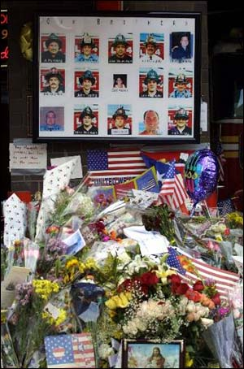
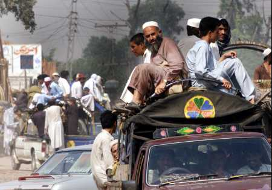

Daniel Dufour, 20 Septembre 2001, 4h00

Pierre, mes amis,Il est 9 heures 21. Je suis au bureau.
Juste avant d'aller prendre mon train, j'ai lu mes courriels de la nuit passée, c'est-à-dire d'hier soir pour vous tous, québécois compagnons.
J'écris ce courriel de mémoire, en ce sens que je n'ai plus devant les yeux le texte exact de la tristesse dont Pierre nous a fait part. Mais j'en ressens bien les échos.
Vous savez, nous, les nord-américains - j'en suis toujours - ressentons apparamment plus fortement que les autres citoyens de ce monde l'impact et la portée de ce qui s'est passé.
Dans mon entourage, j'entends beaucoup de français qui ne peuvent s'empêcher de percevoir dans le drame de NYC un inévitable retour des choses, cruel, injustifiable, mais compréhensible.
Mais si je dis "apparamment", c'est que bien d'autres français, particulièrement ceux du nord, où les campagnes habritent les corps de jeunes américains qui "s'étaient faits petits soldats" pour se "coucher dessous leur croix", comme le chantait Marlene, voient les choses bien autrement.
Nous savons que nous ne sommes pas la première génération d'humains à se demander de quel avenir pourront bien rêver nos enfants. En fait, le nombre de parents qui se sont un jour ou l'autre posé cette question est probablement le même que le nombre de parents que cette Terre ait jamais portés.
Il est de notre devoir de répandre autour de nous un message de compassion et de tolérance.
Nous avons l'OBLIGATION d'avoir la Foi et, surtout, d'agir en conséquence. Je parle ni de Foi chrétienne ni de Foi aveugle. Car je ne crois pas que la Foi soit par définition aveugle, car la Foi a un objet. Elle sera pure si cet objet et pur, et elle sera humaniste par la même équation.
Je parle de la Foi en l'Humanité. Celle qui, traduite dans n'importe quelle langue et dans n'importe quelle morale, implique au minimum le respect d'autrui et, si possible, son amour aussi.
La clé est là.
Je suis convaincu que ce sentiment anime la GRANDE MAJORITE des humains. Croire le contraire, c'est donner raison aux MINORITES bien organisées et manipulatrices qui plogent leurs ouailles dans l'obscurantisme.
Je vais vous dire une chose. Je vais vous avouer un vice. Je crois que, malheureusement, j'ai des germes de racisme en moi et je n'aime pas ça. Une de mes premières réactions, quand j'ai appris ce qui se passait à NYC, fut de me dire que les américains devaient enfermer à double tours tout ce qui ressemble de près ou de loin à un musulman pouréviter le pire.
Dieu merci, cette idée de fou s'est vite évaporée, pour laisser place à un sentiment opposé. Je me dis aujourd'hui que la plus grande victoire sur les fondamentalistes obtus serait de voir les liens se resserrer entre tous les antagonistes des sempiternels conflits arabo-occidento-islamo-judéo-chrétiens.

Je veux voir les leaders musulmans condamner SINCEREMENT ces gestes et les leaders occidentaux faire appel SINCEREMENT à la RETENUE et à la concertation.La RETENUE est une OBLIGATION. Non seulement parce qu'elle s'impose humainement mais parce que, autrement, on légitimerera les MEMES EXCES tous azimuts sans aucun espoir d'avoir quelque influence modératrice crédible.
Il nous faut donner une autre chance à l'Humanité, même si ça fait 50 millions de fois qu'elle trébuche.
C'est comme le chaos sur Terre. Il y a sans cesse des volcans, des tornades, des innondations, des épidémies, bref de la marde sans arrêt mais, en tant que planète, la Terre tient bon.
Les individus périssent, souvent de leur propre folie, mais l'Humanité subsiste.
Tant qu'il y a de la vie, il y a de l'espoir et tant qu'on gardera espoir, il y aura de la vie.
C'est ce qu'il faut croire et c'est en conséquence qu'il faut agir.
Kennedy se disait berlinois, Schroeder s'est dit new-yorkais, disons-nous afghans d'avance. Je parle du peuple et non des fous qui les oppriment.
Espérons que, l'ayant fait d'avance, on aura contribué à les sauver ou en tout cas à les aider.
Et ensuite, maintenant même, disons-nous Humains.
Nos enfants saurons nous entendre. Ils saurront le répéter.
Daniel